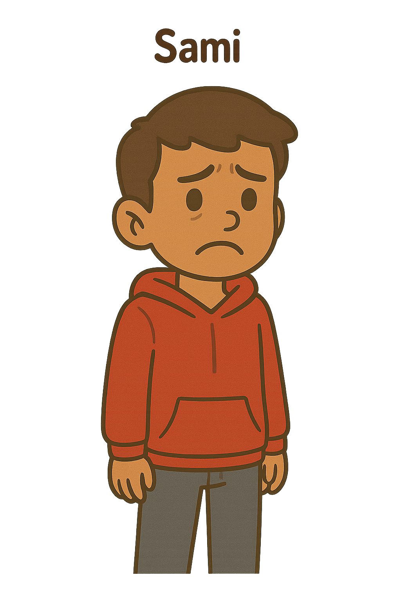
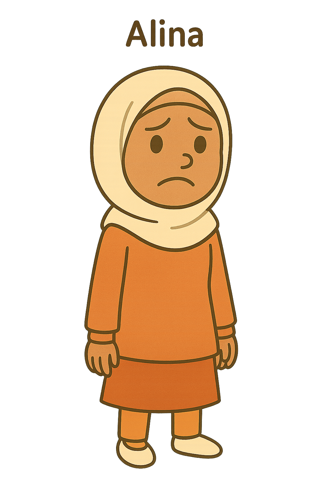

Samis Eltern machen sich Sorgen, dass er sich online radikalisieren könnte

Alinas Lehrkraft denkt, dass ihr neuer Freundeskreis einen radikalisierenden Einfluss auf sie hat
Leonie gerät ins Visier der Sicherheitsbehörden

Eine Distanzierungsberaterin möchte Murat im Umgang mit seinem konservativen Elternhaus und radikalen Freunden im Online-Bereich unterstützen
Eine Sozialarbeiterin in der Jugendhilfe versucht Tobias zu helfen, seinen politischen Aktivismus FDGO-konform zu halten